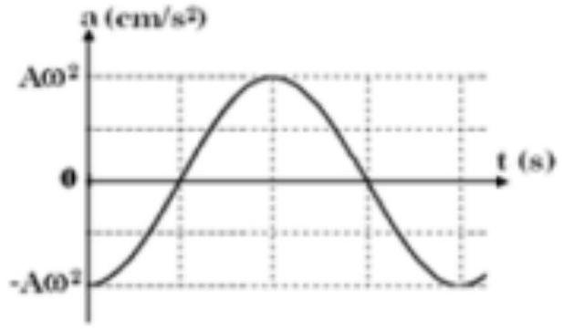
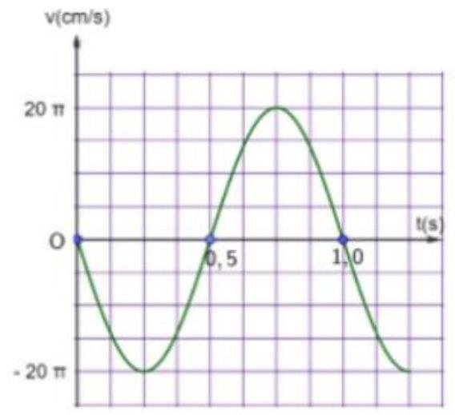
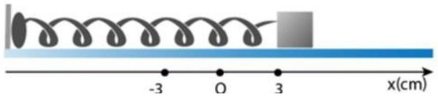

📋 Quy định làm bài
- Thời gian: 45 phút. Còn 10 phút hệ thống nhắc; hết giờ có thêm 5 phút gia hạn rồi tự động nộp.
- Bài làm ở chế độ toàn màn hình. Chuyển tab, mất focus, thoát toàn màn hình đều bị ghi nhận và báo cho giáo viên.
- Không dùng chuột phải, sao chép/dán, phím tắt. Trợ lý AI chỉ mở sau khi nộp bài. Phần tự luận: AI gợi ý điểm, giáo viên duyệt điểm chính thức.
PHẦN I. Câu trắc nghiệm nhiều phương án lựa chọn
Mỗi câu có 4 phương án, chỉ chọn một đáp án đúng (0,25 điểm).
1
Một vật dao động điều hòa theo phương trình $x=6\text{cos}\left( 4\pi t\right)\text{cm}$. Tần số dao động của vật là
2
Một vật nhỏ dao động với phương trình $x=6\text{cos}\omega t\left( \text{ cm}\right)$. Dao động của vật nhỏ có biên độ là
3
Biểu thức li độ của vật dao động điều hòa có dạng $x=A\text{cos}\left( \omega t+\varphi\right)\text{cm}$, vận tốc của vật có giá trị cực đại là
4
Một vật nhỏ dao động điều hòa với tần số 5 Hz , biết tốc độ của vật khi qua vị trí cân bằng là $30\pi\left( \text{ cm}/s\right)$. Biên độ dao động của vật là
5
Một chất điểm dao động điều hoà với phương trình dạng $x=5\text{cos}\left( \pi t+\frac{\pi}{6}\right)\text{cm}$. Lấy $\pi^{2}=10$, biểu thức gia tốc tức thời của chất điểm là
6
Một vật dao động điều hòa trên quỹ đạo thẳng nằm ngang dài 20 cm . Biết trong khoảng thời gian 10 s , vật thực hiện được 20 dao động toàn phần. Gia tốc của vật có giá trị cực đại bằng
7
Trong dao động điều hoà, gia tốc biến đổi
8
Một vật dao động điều hòa có phương trình $x=A\text{cos}\left( \omega t+\varphi\right)$. Hệ thức đúng là
9
Đồ thị biểu diễn gia tốc a của một dao động điều hòa theo thời gian có dạng như hình bên. Pha ban đầu của dao động là

10
Một con lắc đơn, quả nặng có khối lượng 40 g dao động nhỏ với chu kỳ 2 s . Nếu gắn thêm một gia trọng có khối lượng 120 g thì con lắc sẽ dao động nhỏ với chu kỳ:
11
Một con lắc lò xo nằm ngang có chiều dài tự nhiên là 30 cm . Đưa vật tới vị trí lò xo bị nén 5 cm rồi thả nhẹ cho vật dao động điều hòa. Trong quá trình dao động, chiều dài lớn nhất của lò xo là
12
Con lắc lò xo có $k=100\,N/m$, dao động với $A=4\text{ cm}$. Khi vật có li độ 1 cm thì động năng của vật:
13
Con lắc lò xo dao động điều hòa theo phương ngang với biên độ $A$. Li độ của vật khi động năng bằng một nửa thế năng của lò xo là
14
Một con lắc lò xo dao động điều hoà với biên độ 4 cm . Xác định li độ của vật để động năng của vật và thế năng đàn hồi của lò xo có giá trị bằng nhau:
15
Cơ năng đàn hồi của hệ vật và lò xo
16
Hiện tượng cộng hưởng chỉ xảy ra với
17
Một vật dao động tắt dần có các đại lượng giảm liên tục theo thời gian là:
18
Một chất điểm dao động điều hòa dọc theo trục Ox với phương trình $x=0,5\text{cos}\left( 2\pi t\right)\left( \text{dm}\right)$. Quãng đường đi được của chất điểm trong 5 chu kì dao động (tính theo đơn vị cm ) là:
PHẦN II. Câu trắc nghiệm đúng sai
Trong mỗi ý a), b), c), d) chọn Đúng hoặc Sai. Đúng 1 ý: 0,1 · 2 ý: 0,25 · 3 ý: 0,5 · 4 ý: 1,0 điểm.
1
Đồ thị li độ - thời gian của một vật dao động điều hòa được mô tả trên hình

a) Biên độ dao động của vật là 10 cm .
b) Pha ban đầu của vật là $-\pi$ (rad)
c) Chu kì dao động của vật là $1\left( \,s\right)$
d) Tốc độ của vật tại thời điểm $1,5\,s$ là $10\pi\left( \text{ cm}/s\right)$.
2
Một vật dao động điều hòa dọc theo trục Ox , quanh điểm gốc O , với biên độ $A=10\text{ cm}$ và chu kì $T=2\,s$. Tại thời điểm $t=0$, vật có li độ $x=10\text{ cm}$. Lấy $\pi^{2}=10$.
a) Phương trình dao động của vật là $x=10\text{cos}\left( \pi t\right)\text{cm}$
b) Gia tốc cực đại của vật có độ lớn là $100\left( \text{ cm}/s^{2}\right)$
c) Vận tốc của vật tại vị trí có li độ $x=5\sqrt{3}\left( \text{ cm}\right)$ là $50\left( \text{ cm}/s\right)$
d) Thời điểm đầu tiên kể từ lúc bắt đầu dao động vật đi qua vị trí có li độ $x=5\left( \text{ cm}\right)$ là 3 s
3
Hình bên là đồ thị vận tốc - thời gian của một vật dao động điều hòa.

a) Vận tốc cực đại của vật có độ lớn $20\pi\left( \text{ cm}/s\right)$.
b) Tần số của dao động là $1\left( \text{ Hz}\right)$.
c) Quãng đường vật đi được sau 10s là 400 m .
d) Sau 5 s vật đi qua vị trí có li độ $x=5\left( \text{ cm}\right)$ là 10 lần.
4
Cho con lắc lò xo dao động trên mặt phẳng nằm ngang không ma sát như trong hình. Con lắc lò xo thực hiện mỗi dao động mất $2,4\,s$. Tại $t=0$, vật bắt đầu dao động từ chỗ cách vị trí cân bằng $x=3\text{ cm}$.

a) Chu kì dao động của con lắc là 24 s .
b) Tại thời điểm $t=0,6\,s$ vật đang ở VTCB.
c) Tại $x=1,5\left( \text{ cm}\right)$ vật có động năng bằng 3 lần thế năng.
d) Thời gian kể từ lúc bắt đầu dao động đến lúc vật đi qua vị trí có li độ $x=1,5\sqrt{2}\left( \text{ cm}\right)$ lần thứ 2015 là $2417,1\,s$.
PHẦN III. Câu trắc nghiệm trả lời ngắn
Điền đáp số (có thể dùng dấu phẩy hoặc dấu chấm thập phân). Mỗi câu 0,25 điểm.
1
Một chất điểm dao động điều hòa với phương trình $x=5\text{cos}\left( 4\pi t+\frac{\pi}{2}\right)\text{cm}$. Li độ của chất điểm tại thời điểm $t=2,5\,s$ là bao nhiêu cm ?
cm
2
Một vật dao động điều hòa khi có li độ $x_{1}=2\text{ cm}$ thì có tốc độ $v_{1}=4\pi\sqrt{3}\text{ cm}/s$ và khi vật có li độ $x_{2}=2\sqrt{2}\text{ cm}$ thì có tốc độ $v_{2}=4\pi\sqrt{2}\text{ cm/s}$. Biên độ dao động của vật là bao nhiêu cm?
cm
3
Một vật dao động điều hòa với biên độ 5 cm , biết gia tốc cực đại của vật có giá trị $20\pi^{2}\left( \text{ cm}/s^{2}\right)$. Chu kì của vật bằng bao nhiêu giây?
s
4
Một vật dao động điều hòa có phương trình li độ $x=8\text{cos}\left( 7\pi t+\frac{\pi}{6}\right)\text{cm}$. Khoảng thời gian tối thiểu để vật đi từ li độ 4 cm đến vị trí có li độ $-4\sqrt{3}\text{ cm}$ là bao nhiêu giây? (Kết quả lấy sau dấu phẩy hai chữ số).
s
5
Một vật dao động điều hòa với phương trình $x=10\text{cos}\left( 5\pi t+\pi/3\right)\left( \text{cm}\right)$. Thời điểm thứ 2014 vật qua vị trí cách vị trí cân bằng $5\sqrt{2}\text{ cm}$ và khi đó vật đang chuyển động chậm dần là bao nhiêu giây? (kết quả làm tròn đến chữ số thập phân thứ hai)
s
6
Một con lắc lò xo gồm vật nhỏ có lò xo có độ cứng $20\,N/m$ dao động điều hòa với chu kì 2 s với li độ $x=A\text{cos}\left( \omega t+\varphi\right)\,(A>0)$. Khi pha của dao động là $\frac{\pi}{2}$ thì vận tốc của vật là $-20\sqrt{3}\text{ cm}/s$. Lấy $\pi^{2}=10$. Khi vật đi qua vị trí có li độ $3\pi\left( \text{ cm}\right)$ thì động năng của con lắc là bao nhiêu Jun?
J